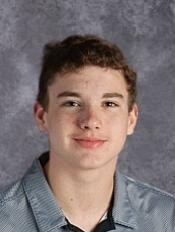

Christian Lentzkow
"When you reach the end of your rope, tie a knot in it and hang on." - Franklin D. Roosevelt
Christian Lentzkow (2019)
About Me
My name is Christian Lentzkow, I am 15 years old and was born on March 26th, 2004.
I currently attend West High and have 3 brothers, Josh(26) Jared(22) and Cayden(17).
Cayden is a senior and graduating this year(2020).
Completed Education
I have completed my freshman year at west high and on the path to graduate in 2022.
I also attend the Waterloo Career Center and have completed a computer
programming course